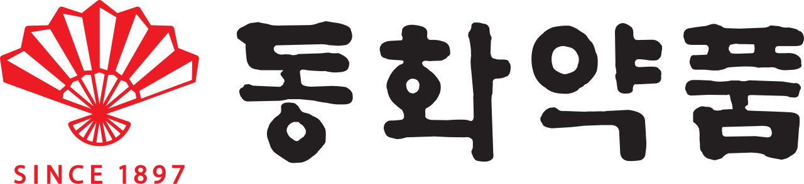

홈 > 브랜드 매거진 > 정관장
정관장 Cheong Kwan Jang
정관장은 KGC인삼공사가 전개하는 대표 홍삼 브랜드다. 6년근 홍삼을 원료로 한 홍삼정, 홍삼톤, 에브리타임 등을 앞세워 국내 홍삼 시장의 약 70퍼센트를 점유한다. 정부 인삼 전매 사업의 계보를 잇는 정통성을 핵심 자산으로, 면역력 증진을 내세운 건강기능식품 분야의 대표 브랜드로 자리 잡았다.
산업 분야 헬스·제약 · 공개 등급 자료 기반 · 브랜드 평가 4.1 ★
한눈에 보는 브랜드
정관장은 KGC인삼공사가 전개하는 대표 홍삼 브랜드다. 6년근 홍삼을 원료로 한 홍삼정, 홍삼톤, 에브리타임 등을 앞세워 국내 홍삼 시장의 약 70퍼센트를 점유한다.
정부 인삼 전매 사업의 계보를 잇는 정통성을 핵심 자산으로, 면역력 증진을 내세운 건강기능식품 분야의 대표 브랜드로 자리 잡았다.
브랜드 관점
정관장의 경쟁력은 정부 전매 사업에서 이어진 헤리티지와 6년근 홍삼을 고집하는 원료 정통성에 있다. 100년이 넘는 관리 계보를 통해 품질 신뢰를 쌓았고, 홍삼정을 비롯한 주력 제품은 식품의약품안전처로부터 면역력 증진, 피로 개선 등 기능성을 인정받았다.
이러한 정통성과 인증을 바탕으로 국내 건강기능식품 시장에서 선도적 지위를 유지하고 있다.
시작과 성장
뿌리는 1899년 대한제국 궁내부 내장원에 설치된 삼정과로 거슬러 올라간다. 이후 홍삼은 오랜 기간 국가 전매 사업으로 관리되었고, 전매청 인삼사업부문과 한국담배인삼공사를 거쳤다.
인삼 전매제가 1996년 폐지된 뒤 1999년 KT&G의 자회사로 한국인삼공사가 독립해 정관장 사업을 이어받았다. 정관장이라는 이름은 관청이 감독해 만든 정품 홍삼이라는 의미에서 비롯됐다.
브랜드 아이덴티티
정관장은 관청 감독 정품이라는 어원에 담긴 신뢰와 정통성을 정체성의 축으로 삼는다. 6년근 홍삼이라는 원료 기준과 100년이 넘는 국가 관리 계보를 전면에 내세워, 한국 홍삼을 대표하는 프리미엄 브랜드로 포지셔닝한다.
제품과 서비스
대표 제품은 6년근 홍삼을 농축한 홍삼정으로, 홍삼 농축액 분야를 개척한 스테디셀러다. 다양한 생약재를 더한 피로 회복 특화 홍삼톤은 1993년 출시되었고, 휴대가 간편한 스틱형 에브리타임은 정관장의 대표 매출 품목으로 성장했다.
이 밖에 정과, 음료, 화장품 등으로 제품군을 확장했다.
현재 상태
정관장은 국내 홍삼 시장에서 약 70퍼센트 점유율로 선두를 유지하며, 에브리타임을 앞세워 미국 등 해외 시장 공략과 수출 확대에 주력하고 있다.
타임라인
BI/CI 변천사
자주 묻는 질문
정관장의 브랜드 아이덴티티는 무엇인가요?
정관장은 관청 감독 정품이라는 어원에 담긴 신뢰와 정통성을 정체성의 축으로 삼는다.
정관장의 대표 제품은 무엇인가요?
대표 제품은 6년근 홍삼을 농축한 홍삼정으로, 홍삼 농축액 분야를 개척한 스테디셀러다.
정관장는 현재 어떤 상태인가요?
정관장은 국내 홍삼 시장에서 약 70퍼센트 점유율로 선두를 유지하며, 에브리타임을 앞세워 미국 등 해외 시장 공략과 수출 확대에 주력하고 있다.
정관장의 공식 웹사이트는 어디인가요?
정관장의 공식 웹사이트는 https://www.jungkwanjang.co.kr 입니다.
함께 읽을 브랜드
 헬스·제약 · 편집 검수아스피린
헬스·제약 · 편집 검수아스피린아스피린(Aspirin)은 1899년 독일 바이엘(Bayer)이 아세틸살리실산을 상표명으로 출시한 진통·해열·소염제다. 세계 최초의 대중 합성 의약품 가운데 하나로,...
NP
내추럴플러스
헬스·제약 · 자료 기반내추럴플러스천연 원료 기반 건강기능식품 브랜드
 헬스·제약 · 자료 기반소망화장품
헬스·제약 · 자료 기반소망화장품꽃을든남자로 남성 화장품 시장을 연 제조사
 헬스·제약 · 자료 기반참존
헬스·제약 · 자료 기반참존방문판매 채널로 성장한 화장품 제조사
 헬스·제약 · 자료 기반코리아나화장품
헬스·제약 · 자료 기반코리아나화장품국내 화장품 산업 초기부터 이어온 제조사

헬스·제약 · 자료 기반동화약품동화약품은 1897년 창업한 한국에서 가장 오래된 제약사다. 국내 최초의 양약으로 꼽히는 소화제 활명수를 만든 회사로 잘 알려져 있으며, 부채표를 상징으로 120년...
 헬스·제약 · 자료 기반바텍
헬스·제약 · 자료 기반바텍바텍은 치과용 디지털 엑스레이와 CBCT 등 영상진단장비를 개발·제조하는 한국 의료기기 기업이다. 파노라마, 세팔로, 콘빔 CT를 하나로 결합한 진단 장비를 중심으로...
MD
미소치과
헬스·제약 · 자료 기반미소치과투명 가격제를 내세운 2세대 네트워크 치과 브랜드